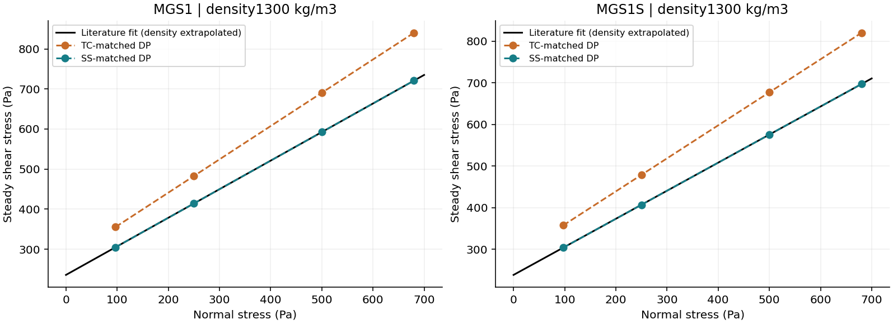
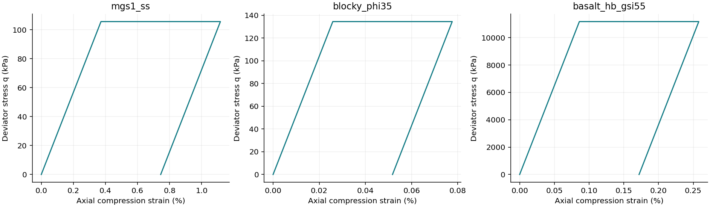
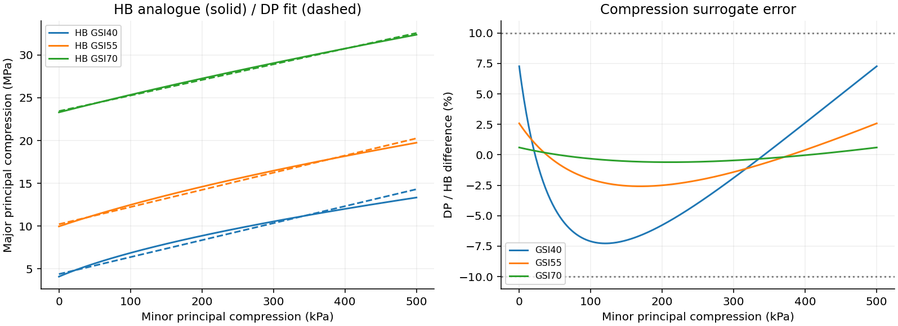
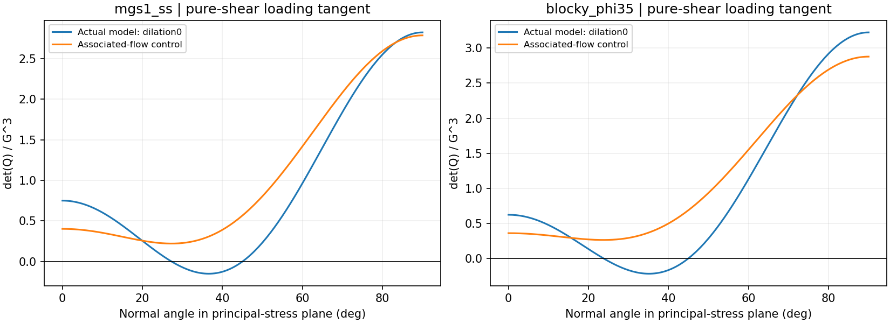

2026년11월25일 · SI 단위 · 3D nD DruckerPrager · 독립 현장 검증 전 연구용
모든 새 시편은 탄소성 재료다. 경화·연화와 팽창은 측정 자료가 없어0으로 두었다. 탄소성 재료라도 사용 하중에서 탄성 구간에 머무를 수 있다.
이 보고서의 작은 수치 오차는 OpenSees가 지정한 재료식을 재현하는지에 대한 결과다. 같은 문헌값으로 보정한 강도 포락선을 다시 맞춘 것은 독립 실험 검증이 아니다. 독립 원시 응력–변형률 자료가 없어 실험 곡선 RMSE·동적 감쇠·체적변형 오차는 산출하지 않았다. 별도 접선 안정성 진단에서는 국부화 가능성이 나와 최종 지반 재료로 확정하지 않았다.
1×1×1 m의 bbarBrick8절점 요소를 사용했다. 각 시편에서 재료 밀도의 질량을 고유치로 확인하고, 측압을 먼저 적용한 다음 변위 제어로 삼축압축·제하를 수행했다. 같은 압력을 X·Y·Z축으로 반복해 등방성을 확인했다. 모래·경화층·암괴층은 일정 수직응력 단순전단과 반전 재하를 추가했고 현무암은 일축 인장도 수행했다. 모래 전단의 수직응력은97·250·500·680 Pa다.
문헌의 직접전단 시험을 단일 요소의 균질 단순전단으로 근사했다. 전단상자 경계와 국부 전단대, 입자 파쇄는 재현하지 않는다. PEER2012/05 §4.5의 여러 응력 경로를 이용한 수치 검증을 참고했지만, 해당 보고서의 정수압 초기화·고정 체적 단순전단 경계조건을 그대로 복제한 시험은 아니다. NASA-STD-7009B는 구현 검증·실험 타당성·불확실성을 구분하는 근거이며 오차 허용치의 출처는 아니다.
| 항목 | 비교식 | 기준 | 판정 범위 |
|---|---|---|---|
| Initial and unloading Young modulus | abs(E_FE/E_input-1) | 0.001% | numerical verification |
| Initial shear modulus | abs(G_FE/G_input-1) | 0.01% | numerical verification |
| DP compression/tension yield | abs(q_FE/q_DP_analytic-1) | 0.01% | numerical verification |
| Fully developed DP simple-shear resistance | abs(tau_FE/tau_DP_analytic-1) | 0.01% | numerical verification |
| 1m3 consistent material mass | abs((k/eigenvalue)/(rho*V)-1) | 9.999999999999999e-06% | numerical verification |
| Force balance / confinement / GP spread | max(abs(residual))/reference | 0.001% | numerical verification |
| Literature MC shear envelope | abs(tau_FE/(c_target+p*tan(phi_target))-1) | 5.0% | calibration screening |
| Compression-fitted DP against HB equation | abs(sigma1_DP/sigma1_HB-1) | 10.0% | analogue surrogate screening |
| Settlement between mesh/step comparisons | abs(s_new/s_reference-1) | 5.0% | solution verification |
| Conditional plastic-loading stability screen | min_sampled_normal det(Q)/G^3 | Positive sampled determinants; a negative value flags possible localization, not global collapse | conditional stability diagnostic |
오차 허용치는 이 프로젝트의 연구용 판정값이다. 문헌의 공인 합격기준으로 표현하지 않는다. 음향 텐서는 상대오차 허용치가 아닌 별도 안정성 진단이다. 보정 기준을 넘은 비교군도 삭제하지 않고 오차를 남겼다.
| 지표 | 최대 오차 | 단위 | 발생 시편 |
|---|---|---|---|
| yield_error_pct | 4.44089e-13 | % | basalt_hb_gsi55 |
| initial_E_error_pct | 7.77156e-14 | % | blocky_phi35 |
| unloading_E_error_pct | 1.66533e-13 | % | basalt_hb_gsi55 |
| force_balance_relative | 3.95729e-09 | 상대값 | mgs1_ss |
| lateral_error_relative | 2.68221e-07 | 상대값 | basalt_lab_reference |
| gauss_point_spread_relative | 3.01723e-15 | 상대값 | basalt_hb_gsi55 |
| steady_shear_formula_difference_pct | 0.00125777 | % | blocky_phi40 |
| mass | 1.43041e-12 | 상대값 | 전체20종 |
위 값은 입력한 구성식·경계조건·평형에 대한 오차다. 재료의 실제 강도·강성 추정 오차나 실험 재현 오차가 아니다.
| 시편 | E(MPa) | ν | ρ(kg/m³) | DP c(kPa) | DP φ(°) | 목표 MC c(kPa)·φ(°) |
|---|---|---|---|---|---|---|
| crust_tc | 11.48 | 0.28 | 1025.0 | 5.8 | 30 | 5.8 · 30 |
| mgs1_ss | 28.4 | 0.22 | 1300 | 0.19706 | 30.814 | 0.235664 · 35.5 |
| blocky_phi35 | 520 | 0.24 | 1700.0 | 0 | 35 | 0 · 35 |
| basalt_hb_gsi55 | 13000 | 0.28 | 2760.0 | 1141.3 | 64.8288 | 1141.3 · 64.8288 |
공통 ψ=0°, 경화=0이다. 현무암의 큰 유효 마찰각은 낮은 구속압 범위의 HB 곡선을 선형으로 근사한 DP 입력이며, 현장에서 직접 측정한 마찰각이 아니다.
실행한 OpenSees3.4.0의 항복식은 ||s||+ρDPI₁−√(2/3)σY=0이다. 삼축 대응 변환에서 σY=6c cosφ/(3−sinφ), ρDP=2√2 sinφ/[√3(3−sinφ)]를 사용했고 별도 삼축 해석식과 일치하는지 검사했다. 온라인 문서의 σY 변환식에는 추가 √2 분모가 있어 현재 구현·이 해석해와 불일치한다. 실행 버전 소스와 수치 시편 결과를 함께 보존했다.

Dotson2024 Eq2/Table4의 밀도–점착력 관계로1300 kg/m³의 점착력을 산정했다. MGS1은235.664 Pa, MGS1S는238.156 Pa다. 각각 시험 최소밀도1320·1310 kg/m³보다 낮으므로 외삽이다. 마찰각35.5°·34°는 인접 밀도 값이다. 기존의 삼축압축 대응 DP는 이 직접전단 포락선을 약16.57%·17.66% 크게 계산했다. 새 단순전단 대응 변환은 이 오차를 줄인다.
단순전단 대응 DP 입력은 물리적인 MC c·φ 자체와 다르다. 두 값을 별도 열에 보존했다. 직접전단 대응을 개선하면 삼축압축 대응은 달라진다. 다른 응력 경로 예측 오차를 함께 확인해야 한다. 같은 데이터의 보정오차가 작다는 이유로 MGS1을 MGS1S보다 우수한 현장 재료로 단정하지 않는다.
| 시편 | 포락선 MAPE(%) | 포락선 RMSE(Pa) | 권고 |
|---|---|---|---|
| mgs1_tc | 16.570167 | 88.249305 | sand: TC comparison |
| mgs1_ss | 1.224283e-06 | 1.4402612e-05 | sand: basaltic-composition baseline |
| mgs1_ss_nearest | 1.686421e-06 | 2.2114117e-05 | sand: density-transfer sensitivity |
| mgs1s_tc | 17.660679 | 91.524766 | sand: TC comparison |
| mgs1s_ss | 9.3371578e-07 | 8.9846898e-06 | sand: sulfate-rich alternative |
| mgs1s_ss_nearest | 1.02819e-06 | 1.0056474e-05 | sand: density-transfer sensitivity |

압축에서 항복 이후 영구변형과 탄성 제하를 확인했다. 반복 전단의 전단 일은 경로에 따른 적분값이며, 실험 감쇠비나 전체 소산에너지로 해석하지 않는다.

Villeneuve·Heap의 지구 현무암 강도·암반 스케일 관계와 Hoek–Brown 식을 이용해0–500 kPa의 최소 주압축응력 구간을 DP로 근사했다. GSI40·55·70의 보정 오차는 각각 약7.27%·2.58%·0.60%다. GSI55는 평균 암반 가정이고40·70은 불확실성 비교다. GSI70이 강하거나 오차가 작다고 실제 화성 암반으로 더 적합한 것은 아니다.
압축에 맞춘 DP의 인장강도는 HB 절단값보다 GSI40·55·70에서 각각 약441%·301%·225% 크다. 따라서 인장·박리·균열 검증용으로 채택하지 않는다. 지반 적용에서는 암반 적분점의 주응력이 압축 상태이고 보정 구간 안에 있는지 별도로 확인한다. Villeneuve 식8의 부호는 Hoek–Brown2019의 정식 식6과 대조해 후자의 음수 부호를 적용했다.
| 시편 | 층 | 수치검증 | 강도 대조 오차(%) | 권고·한계 |
|---|---|---|---|---|
| crust_tc | duricrust | PASS | 20 | 경사 해석 추정 강도·천부 유효 강성 사용; 밀도1200→1025 이전 가정 |
| crust_ss | duricrust | PASS | 0.0001319 | 구성식·평형 구현 확인; 현장 물성 검증은 남아 있음 |
| mgs1_tc | sand | PASS | 16.57 | 삼축압축 대응 비교군; 문헌 직접전단 포락선을 과대평가 |
| mgs1_ss | sand | PASS | 1.224e-06 | 직접전단 대응 개선; 일반 현무암질 조성을 가정한 기준 비교용 |
| mgs1_ss_nearest | sand | PASS | 1.686e-06 | 가까운 시험 밀도1310/1320의 강도를1300에 옮긴 민감도 비교 |
| mgs1s_tc | sand | PASS | 17.66 | 삼축압축 대응 비교군; 문헌 직접전단 포락선을 과대평가 |
| mgs1s_ss | sand | PASS | 9.337e-07 | 직접전단 대응 개선; 황산염 풍부 조성의 대안, 현장 조성 확인 필요 |
| mgs1s_ss_nearest | sand | PASS | 1.028e-06 | 가까운 시험 밀도1310/1320의 강도를1300에 옮긴 민감도 비교 |
| blocky_phi20 | blocky_ejecta | PASS | 22.47 | 타지역·지구 유사재 범위 시나리오; InSight c·φ 실측값 없음 |
| blocky_phi30 | blocky_ejecta | PASS | 20 | 타지역·지구 유사재 범위 시나리오; InSight c·φ 실측값 없음 |
| blocky_phi35 | blocky_ejecta | PASS | 16.95 | 타지역·지구 유사재 범위 시나리오; InSight c·φ 실측값 없음 |
| blocky_phi40 | blocky_ejecta | PASS | 12.58 | 타지역·지구 유사재 범위 시나리오; InSight c·φ 실측값 없음 |
| blocky_c1000_phi30 | blocky_ejecta | PASS | 20 | 타지역·지구 유사재 범위 시나리오; InSight c·φ 실측값 없음 |
| blocky_c5000_phi30 | blocky_ejecta | PASS | 20 | 타지역·지구 유사재 범위 시나리오; InSight c·φ 실측값 없음 |
| blocky_ss_phi30 | blocky_ejecta | PASS | 0.0005387 | 타지역·지구 유사재 범위 시나리오; InSight c·φ 실측값 없음 |
| blocky_ss_phi35 | blocky_ejecta | PASS | 0.0005845 | 타지역·지구 유사재 범위 시나리오; InSight c·φ 실측값 없음 |
| basalt_hb_gsi40 | fractured_basalt | PASS | 7.272 | GSI 불확실성 비교용; 더 큰 강도·더 작은 보정오차로 적합성을 확정할 수 없음 |
| basalt_hb_gsi55 | fractured_basalt | PASS | 2.583 | 평균 화산암반 GSI55 가정의 압축 비교용; 인장강도 과대평가 |
| basalt_hb_gsi70 | fractured_basalt | PASS | 0.6029 | GSI 불확실성 비교용; 더 큰 강도·더 작은 보정오차로 적합성을 확정할 수 없음 |
| basalt_lab_reference | laboratory_reference_only | PASS | — | 지구의 온전한 현무암 강도 참고용; 파쇄 지반에는 직접 채택하지 않음 |
3–13 m 암괴층은 Hughes2022의 다른 화성 지역·지구 유사재 범위인 마찰각20–40°를 이용했다. 무점착 파쇄암 시나리오와 점착력1–5 kPa의 혼합 입상체 시나리오는 서로 다른 지반 가정이다. 수렴을 위해 실제 강도를 임의 조정한 값으로 숨기지 않는다.
팽창각0°·경화0의 비연관 DP는 일부 소성 응력 경로에서 국부화와 메시 의존성이 나타날 수 있다. 따라서 위의20/20 PASS는 재료식과 평형 구현에 대한 결과이며 전체 지반의 수학적 안정성까지 통과했다는 뜻이 아니다.

순수전단의 소성 재하 접선으로 음향 텐서 Q를 계산했다. 그림의0 미만 영역은 국부화 가능성이 있는 방향을 뜻한다. 각도는 주응력 좌표의 법선 방향이며 지반 경사각이 아니다. 팽창각을 마찰각과 같게 둔 선은 수학적 대조군으로, 지반 재료를 이 값으로 바꾸지 않았다.
접선 계산식은 실제 OpenSees 응력의6방향 유한차분과 대조했고 최대 차이는 G 대비1.33357e-05였다. 별도의 직접 텐서 연산으로 행렬식 계산도 대조했다. 기준 지반 감압 상태에서 항복면 근처 모래4,476개 점 중736개는 조사한 법선에서 음수 행렬식이 나왔다. 이는 해당 응력에서 앞으로 소성 재하가 일어난다고 가정한 조건부 진단이다.
| 재료 | 항복면 근처 점 | 음수 행렬식 점 | 최소 det(Q)/G³ |
|---|---|---|---|
| mars_nl25_basalt_hb_gsi55 | 0 | 0 | 비해당 |
| mars_nl25_blocky_phi35 | 2124 | 0 | 0.0764114 |
| mars_nl25_crust_tc | 0 | 0 | 비해당 |
| mars_nl25_mgs1_ss | 4476 | 736 | -0.244337 |
세 주응력 평면을0.5° 간격으로 조사했다. 축 끝점 중복을 포함한543개 표본이며 모든 방향·모든 중간 상태의 안정성 증명은 아니다. 항복면 근처라는 사실만으로 마지막 증분이 소성 재하였다고 확정할 수도 없다. 이 진단은 전역 지지력이나 native 호출 정체의 원인을 확정하지 않는다.
Sabet·de Borst2019의 안정성·정규화 논의를 참고했다. 논문의 Mohr–Coulomb 임계 경화식을 DP에 그대로 대입하지 않고3D DP 접선을 따로 유도했다. 정규화 모델·체적변형·경화 자료를 보정하기 전까지 후속 소성 변형의 최종 예측값으로 채택하는 데는 한계가 있다. 진단 전체값 · 20종 경로별 진단 · 재현 코드
| 층 재료 | 최대 전단변형률(%) | 자중 이후 증분 최대 전단변형률(%) |
|---|---|---|
| mars_nl25_basalt_hb_gsi55 | 0.00166313 | 0.000554821 |
| mars_nl25_blocky_phi35 | 0.023717 | 0.0181037 |
| mars_nl25_crust_tc | 0.0614623 | 0.0278314 |
| mars_nl25_mgs1_ss | 0.189296 | 0.071666 |
기준3,504개 요소·자중100증분 실행의 저장 변위에서 bbarBrick 소변형 운동학으로 복원했다. 전단변형률은 주변형률의 최댓값과 최솟값의 차이다. 원소 한 개의 비정형 형상에서 OpenSees 변형률과 비교하고, 지반 전체의 체적변형률–평균응력 관계도 대조했다. 전체 이력의 극값이 아닌 세 단계의 저장 상태다.
모래의 최대 전단변형률은 약0.189%, 자중 이후 증분은 약0.0717%다. 파속으로 환산한 초기 강성이 이 변형률 범위의 실제 강성까지 검증한다는 뜻은 아니다. 실험 G/Gmax·체적변형 곡선과 비교할 자료가 남아 있다. 층별 변형률 CSV · 운동학 검증과 전체 결과
두 후보의 작은 보정 오차만으로 실제 지반 적합성을 순위 매길 수는 없다. Long-Fox·Britt2023 Table4에서 MGS1은 현무암질 기본 조성, MGS1S는 이 기본 조성을 바꾸고 석고를40 wt% 포함한 황산염 풍부 모사토다. 따라서 일반적인 현무암질 지반이라는 가정에서는 MGS1을 기준으로, 황산염이 풍부하다는 별도 가정에서는 MGS1S를 대안으로 둔다. 이는 조성 가정에 따른 추론이며, InSight 지반이 이 석고 함량이라는 측정 근거는 아니다. 해당 논문은 광물·원소·입도 자료로, 밀도1300의 독립 응력–변형률 곡선 검증 자료로 사용하지 않았다.
현무암의 공극률4%는 Table2의 지구 유사암 연결 공극률이다. Table3의 일축압축강도 경험식 자체 산포가 크다. 전 공극률 범위의 추정 표준오차는59.5 MPa, 공극률0.1 미만 구간에서는91.8 MPa다. DP–HB 근사 오차2.58%가 이 입력 강도 불확실성을 해소하는 것은 아니다.
모래 강도 자료의 수직응력은97–680 Pa다. 기준 조합의3,504개 요소 해석에서는 모래층 수직압축이 최대 약10.0 kPa여서 시험 범위를 넘는다. 링 밑면 접촉응력86.4·17.0 kPa는3 m 깊이 암괴층에 작용하므로 이를 모래층 응력과 같다고 비교하지 않았다. 저응력 강도식의 외삽이 남는다. 경화층의 점착력은 밀도1200·φ30°를 가정한 기울기 해석 추정을1025 kg/m³에 옮겼다. 모래·현무암의 초기 강성, 심부 층서의 공간 평균, 암반 GSI와 공극률도 각각 대용·추정 가정이 남아 있다. 기초 밑면3 m가 가정한 모래층 끝3 m와 같아서, 층 경계가 달라져 밑면 아래에 모래가 남는 경우의 민감도는 별도 확인해야 한다.
점착력 계수 민감도는 계수±범위의 모서리 조합이며 신뢰구간이 아니다. 독립 압축·전단·체적변형 자료로 보정하기 전까지 지지력·인발 안전이나 최적 설계의 확정 근거로 쓰지 않는다. 3D 지반 조합 비교 보고서에서 수렴과 메시·증분 의존성, 각 층의 소성 상태를 확인한다.
이전 PDMY02 시편은 보존했다. 기존 보고서에서 저응력 포락선 차이와 반복·수축·팽창 매개변수의 추가 보정 필요를 확인했다. 이번 정적 비교는 자료로 설명 가능한 최소 매개변수의 DP를 사용하며, 이 결정이 모든 동적 문제에서 DP가 PDMY02보다 우수하다는 의미는 아니다. 이전28종 평가
평가 기준 CSV · 167개 재하 결과 CSV · 20종 평가 CSV · 재료 입력값 CSV · 기계 판독 결과 · 지반 폴더 정리 결과 · 초기 검사식·측정 구간 점검 기록
초기 G 검사에서는 항복 이전의 작은 변형 구간을 따로 측정하도록 수정했고, DP 인장 해석식과 MC/HB 인장 대조를 분리했다. 재료 매개변수와 허용오차는 유지했다.
python material/nonlinear_layers_20261125/run_specimens.pypython material/nonlinear_layers_20261125/check_stability.pypython material/nonlinear_layers_20261125/strain_audit.pypython material/nonlinear_layers_20261125/evaluate.py